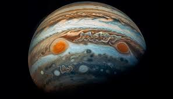

Jupiter adalah planet kelima dari Matahari dan merupakan planet terbesar di tata surya. Dengan diameter sekitar 139.820 kilometer, Jupiter memiliki massa yang lebih besar daripada gabungan semua planet lain di tata surya. Jupiter adalah planet gas raksasa, yang sebagian besar terdiri dari hidrogen (90%) dan helium (10%), dengan atmosfer yang sangat tebal dan penuh dengan badai besar. Salah satu badai paling terkenal adalah Great Red Spot, sebuah badai raksasa yang telah berlangsung selama lebih dari 300 tahun. Jupiter memiliki sistem cincin tipis dan lebih dari 90 satelit alami. Beberapa satelit terbesar Jupiter, yang dikenal sebagai satelit Galilea, adalah Io, Europa, Ganymede, dan Callisto. Ganymede adalah satelit terbesar di tata surya, bahkan lebih besar dari planet Merkurius.
Fakta menarik tentang Jupiter adalah bahwa rotasi planet ini sangat cepat, hanya membutuhkan sekitar 10 jam untuk menyelesaikan satu putaran sehingga menyebabkan planet ini memiliki bentuk yang agak pipih di kutubnya. Jupiter juga memiliki medan magnet yang sangat kuat, 14 kali lebih kuat dari medan magnet Bumi, yang melindungi planet ini dari radiasi kosmik. Penelitian Jupiter terus dilakukan, terutama karena satelit-satelitnya yang unik. Europa, salah satu satelit Galilea, dianggap memiliki lautan air cair di bawah permukaannya yang berpotensi mendukung kehidupan. Misi luar angkasa seperti Juno dan Galileo telah memberikan banyak informasi tentang Jupiter dan sistemnya.
Untuk informasi lebih lengkap tentang jupiter silahkan kunjungi Wikipedia